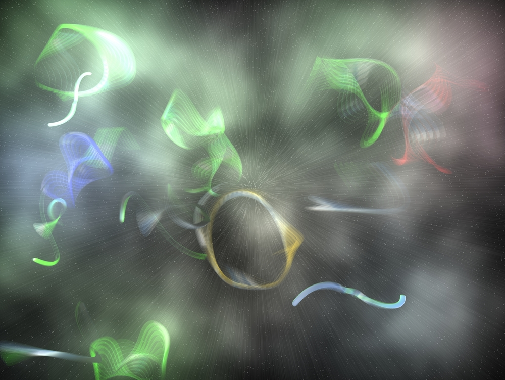

String Theory - The Basics
First, we used to think that the smallest particles are atoms. Then we identified the charges in them, and due to numerous experiments (like the Rutherford experiment), we found the existence of the nucleus, leading to the discovery of electrons, protons, and neutrons. Then, we discovered quarks, the fundamental elements that make up the nucleons (parts of the nucleus - protons and neutrons). But, does it end there? Are the quarks that make up all our mass, and is there nothing that makes them up?

There have been multiple theories that try to answer this question, but the theory with the most supporters and the most detailed theory that unifies classical physics (that we can see in application regularly) and quantum physics is the String Theory. In its most basic form, it states that if you zoom into quarks enough, you will see strings, strings that are made up of energy, each vibrating at different speeds and in different manners, making up the multiple fundamental particles that form up the entire universe.
History of the String Theory
In the 1900s, Albert Einstein, adding onto Newton's theory of gravity, basically said that the cosmos is made up of a flat fabric of spacetime, and massive celestial bodies (like the Sun) form a curve in these objects, which is how the smaller objects like moons (around planets) and planets and asteroids (around stars) rotate around them. Another scientist, named ___ decided to do something similar with the other known force at the time, electromagnetism. Except, there was one problem. There was no other object to “warp and curve”, like Einstein did to spacetime. Therefore, he thought of an extra dimension, and when he calculated the formula of electromagnetism taking an extra spatial dimension into account, what formed was the same equation as the electromagnetism equation of the current world. This idea of extra dimensions originated here. Although further calculations proved this theory to be wrong as it didn’t match with other known constants (the strength of gravity, the mass of nucleons and electrons, etc.), it had risen a worldwide thought experiment about dimensions, which would take centuries to answer.
The String Theory
In the generation above mine, a guy named ___ came up with the idea of the String Theory. He said that firstly, inside the elementary particles, there are vibrating strings. These strings are made of energy, and the energy is vibrating in different ways, creating the elementary particles which form the world as we know it. Along with that, he said that for the String Theory to be true and for it to unify classical physics (including general relativity) to quantum physics, it needs to have a few extra, microscopic dimensions as well. In fact, it needs for this universe to have a total of 11 dimensions (4 of which we sense today - 3 of space and 1 of time).
The String Theory also implies the existence of multiverses, saying that the Big Bang was either the fusion (the combining) of two universes, or the fission (the breaking apart) of one universe. It shows equations about wormholes and their existence, which has also risen a debate in the scientific communnity. Moreover, it has talked about superparticles like the photino, which are said to be related to the photons, and be the carrier of dark matter. All of this, though, I will discuss more in detail in another, upcoming article.
The 11 Dimensions of String Theory
Dimension 1: Think of a straight line, only moving in two directions, left and right. This is the first dimension, and something we are all familiar with and experience in our own lives. It connects two points, but only on this one direction plane.
Dimension 2: This dimension is up and down, and it, along with dimension 1, forms a 2D shape. Anything we see on a flat screen, we see in 2D.

Dimension 3: This dimension is back and forth. It forms 3D structures, like cubes and pyramids, and these are the 3 spatial dimensions that we live in.
Dimension 4: This dimension is time itself. Time is moving in the forward direction, with everything in it, included in this dimension. Currently, we live in this dimension (or at least we believe and have proven that we live in at least these 4 dimensions).
(Space.com)
Dimension 5: This dimension is a similar world to ours. It brings into existence the idea of parallel universes; that universe, like ours, stems from the Big Bang, but the people in that universe and the elements and particles in that universe make different decisions (the particles land in a different spot on the probability wave (this wave is discusses in the Quantum Tunnelling article).
(Smithsonian Magazine)
Dimension 6: This dimension acts like a timeline, letting us see the past, present and future of our universe, starting from the Big Bang.
(NASA)
Dimension 7: This dimension and the following ones don’t necessarily maintain our current laws of nature, and the universes in these dimensions don’t originate from the Big Bang.
Dimension 8: This dimension may be inciting, showing all the past, present and futures of each and every universe in existence.
Dimension 9, 10, 11: All laws of physics can coexist here, the laws that apply in our world and the laws that don’t apply in our world.
The reason that there aren’t more dimensions is because more dimensions, scientists think (and calculate through some mathematical formulas), that after the 11th dimension, particles become unstable and start to collapse back down to 11 dimensions.
How can it be proven?
This theory hasn’t been proven yet, which is the only reason that it is still a theory, and not another life-changing law of the universe. Some say it can’t be proven, and that’s true, at least according to our current level of technology. To prove this theory, …
We may be closer to proving this theory than anticipated. In the Fermilab, an experiment was done that indicated a new force - because it indicated an incompletion in the Standard Model. What this might prove is the existence of photinos, a set of hypothetical fermions that are supposed to be related to the photons and supposed to carry the force of dark matter. They should be able to be detected in large colliders, and these are also predicted by string theory. If their existence is proven, it will be proof that the string theory is correct. - according to Dr. Michio Kaku.